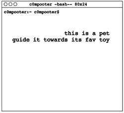
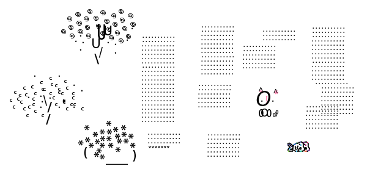
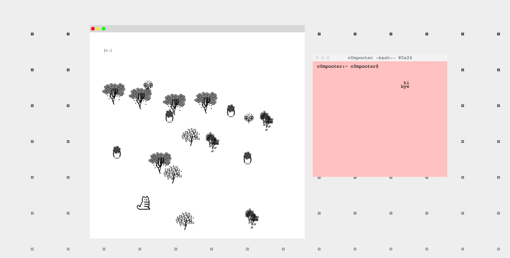

Created for my class Introduction to Computation Media, this whimsical game was inspired by my desire to elicit emotion towards a computer. The "computer" in Nice to Meet You subconsciously attempts to evoke an emotional connection with the user by conjuring objects or performing mundane actions that people are familiar with, such as trees or doing laundry, and invites the user to explore its space. Although the computer is somewhat territorial and secretive, the computer ultimately has no real agency over its privacy. As computers can only respond to and act on human command, the user is faced with choices that determine whether the digital entity's desires are also respected.
This project utilizes the p5 and p5 play libraries.
My goal aesthetically was to portray an environment that strongly represented a digital entity. Drawing from text based adventure games, I created a majority of my assets (characters, objects, maps) out of ASCII characters. I also made a conversational interface loosely reminiscent of a terminal to further evoke the impression of a computer.
 My initial demo for a user test portrayed two desktop windows on a background: the larger window was a map filled with a garden of ASCII trees, while the smaller one was a terminal chat box that moved vertically with the user's mouse. Some trees were by movable by click while others could be easily nudged. Being in the vicinity of the animal would also trigger the trees to disappear.
During the user test, I noticed:
Although this demo was a rough version of only one map, its user test provided me with enough insight and direction to determine how I would move forward with rebuilding and transitioning to other maps. I realized I needed to:
I ended up creating four main maps with one main interaction and one triggerable event. Text buttons would appear when the event is trigger, allowing the user to take time with moving forward and decision making. I took away the "desktop" appearance and had one fullscreen map with a static terminal box on the upper righthand corner. I also had fun adding in splashes of color and twirlies.
Videos of the playthrough are shown below.
Map 1 Playthrough
Map 2 and 3 Playthrough
Map 4 until End Playthrough